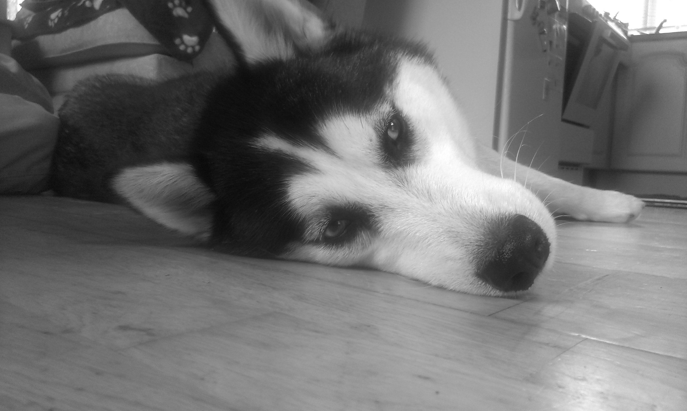
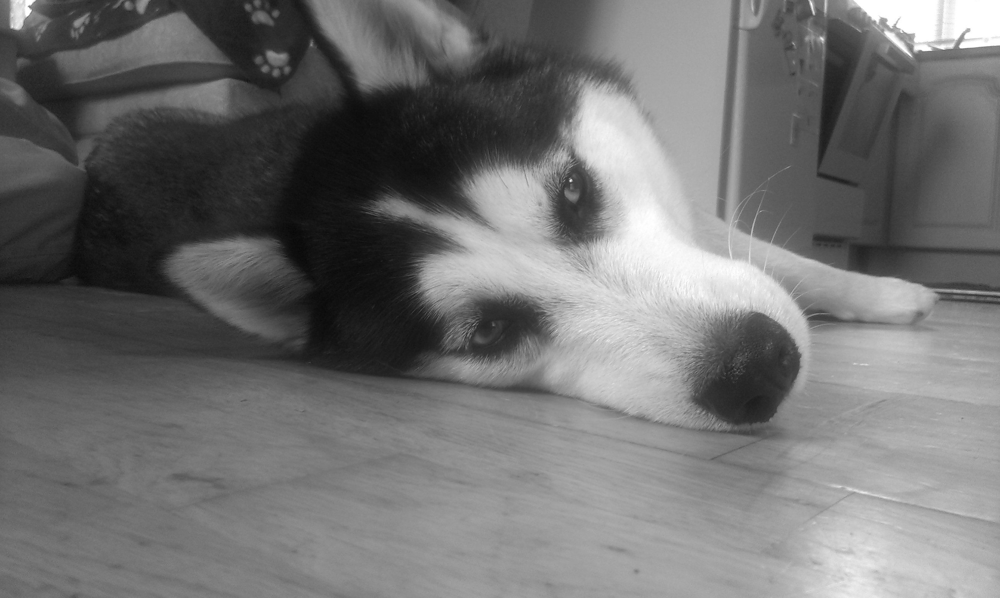

Welcome on my personal webpage designed and coded by myself. It took me a lot of work, sacrifice and commitment to learn coding however everything you need is in the Internet.
I am sure you will find a good piece of interesting and inspiring material on this website. Feel free to share with me your opinion. It is something I value the moste and which is very helpful in future projects. Just tell me what do you think about it, what I can change or what you don't like. Thanks for visiting. Enjoy
Have a look at few photos from my life
 

Career Overview
At the moment I work in the construction industry in Switzerland however as you review my resume you will see that I have extensive experience as an experienced/skilled product builder in Stryker Neurovascular Cork, Ireland which is well-known player in medical devices industry. I was responsible for manufacturing, monitoring and inspecting products along full manufacturing processes, auditing compliance with the 6S methodology (Sort, Shine, Schedule, Standardize, Sustain, Safety) for dedicated zone, attending quality team meetings and developing constant improvements for audit strategies, writing audit reports to zone manager, training personnel. I have proven myself to be a competent and creative team player with the capacity to manage a number of diverse functions and leader aspirations.
My job has required extreme attention to details and organizational skills coupled with a creative approach and problem solving. I have also had the opportunity to develop strong interpersonal and professional communication skills. Everyday work with accordance to cGMP (current Good Manufacturing Practice) and Lean Manufacturing were the key points to uphold high volume manufacturing process and product quality. I also possess the right balance of being friendly and approachable, whilst being able to make those hard decisions needed to keep things moving.
I am an open-minded person and recently started an online Web Programming course which can allow me to work as a freelancer in designing websites, however I am still looking for a perfect, long term job in which I could make enough money for my family and have enough time for my IT interests and further self-development.
I am a highly motivated employee who is passionate about providing exceptional satisfaction.
Cereer Experience
- Curtain Rail/Profile Fitter at Casarex Trading GmbH - Switzerland
2015 – Present
Fitting curtain rails/profiles (Vorhangschiene) according to technical drawing and customer order. - Independent Contractor as a Mystery Shopper and POS (Point of Sale) & Brand Compliance Auditor at BARE International, International Service Check, Pan Research - Cork, Ireland
Aug 2015 – Aug 2015
Performing businesses checks by auditing customer service quality standards and brand standards compliance adhering to the provided scenario. Reporting by email to Field Coordinator usually within 24 hours. - Experienced/Skilled Product Builder at Stryker Neurovascular Cork - Cork, Ireland
Jul 2007 – Aug 2015
Wide range of manufacturing activities along full production process of different products. As a quality auditor, auditing compliance with the 6S (Sort, Shine, Schedule, Standardize, Sustain, Safety) methodology for dedicated zone, attending quality team meetings, writing audit reports directly to the zone manager. Implementing new ideas and methods as a ‘Transform’ R&D project production expert. Training personnel. - Builder/Welder at Ivanpark LTD. Plant & Engineering - Cork, Ireland
May 2005 – Jun 2007
Fitting and welding steel elements according to technical drawing and customer order.
Education
- IT Online Course - Frontend Web Development
2017
Activities and Societies: HTML5, CSS, RWD, Bootstrap - Cork Institute of Technology - Cork, Ireland
Higher Certificate in Good Manufacturing Practice & Technology in Pharmaceuticals & Medical Devices
2013 – 2015
Activities and Societies: Organic & Inorganic Chemistry, Good Manufacturing Practice & Quality Assurance, Good Manufacturing Practice & Quality Control, Microbiology, Mathematics, Measurement Science, Sensors & Systems, Cleanroom Management, Creativity Innovation & Teamwork - Stanislaw Staszic Secondary School No. 4 - Poland
2000 - 2004
Field Of Study: Journalism
Language Skills
- Polish - Native
- English - Fluent (C1)
- German - Intermediate (B1)
Skills
- Subject Matter Expert in full manufacturing Processes of Pharmaceuticals & Medical Devices
- Auditor 6S (Sort, Shine, Schedule, Standardize, Sustain, Safety) methodology
- Practical intermediate knowledge of MES (Manufacturing Execution System)
- Manual Handling
- Practical Knowledge of cGMP
- Lean Manufacturing
- Problem Solving
- Management
- Driving Licence B
- General IT Knowledge including Front End Web Development programming languages (HTML, CSS, Responsive Design, Bootstrap